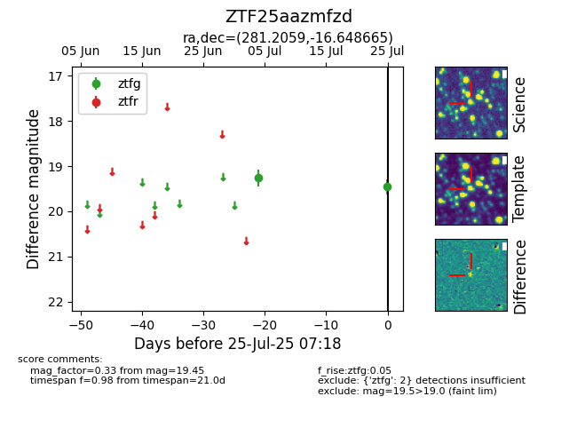

Target ZTF25aazmfzd at 2025-07-25 07:18, see:
FINK: fink-portal.org/ZTF25aazmfzd
Lasair: lasair-ztf.lsst.ac.uk/objects/ZTF25aazmfzd
ALeRCE: alerce.online/object/ZTF25aazmfzd
alt names
ZTF25aazmfzd (ztf,fink)
coordinates:
equatorial (ra, dec) = (281.2059,-16.64867)
galactic (l, b) = (17.3208,-6.08681)
photometry
last ztfg=19.45
2 ztfg detections
